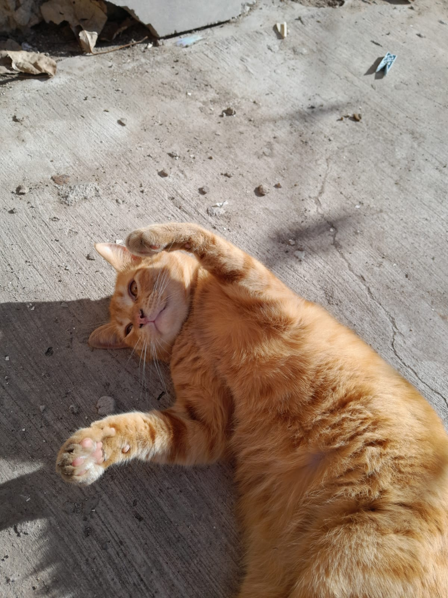

Patitas Felices
Somos una ONG cuya misión es rescatar, proteger y darles un hogar seguro a tantas mascotas como sea posible. Te damos la bienvenida a nuestro espacio digital, un lugar pensado por y para las mascotas.
Lo que hacemos

Somos una ONG cuya misión es rescatar, proteger y darles un hogar seguro a tantas mascotas como sea posible. Te damos la bienvenida a nuestro espacio digital, un lugar pensado por y para las mascotas.
